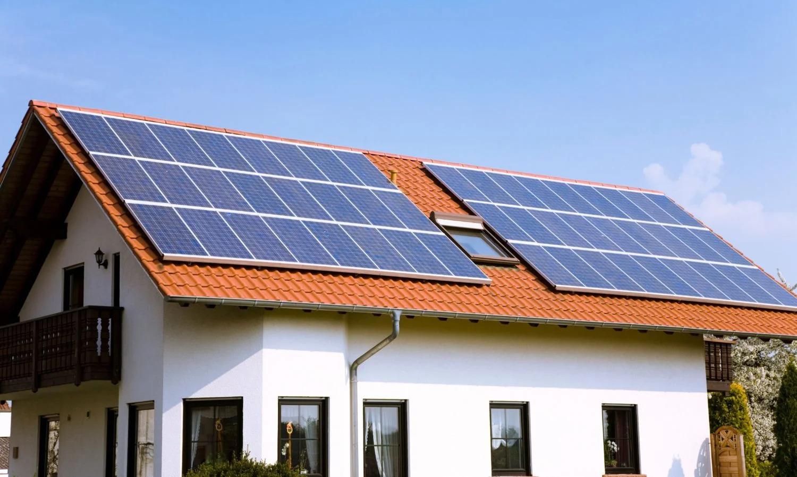

Solar Energy
Converts sunlight directly into electricity using photovoltaic (PV) panels.
Learn more
Solar energy is one of the most widely adopted renewable sources because sunlight is free, abundant, and produces no greenhouse gas emissions during operation. Solar panels can be installed on rooftops, open fields, or even integrated into building materials, making them flexible for both homes and large-scale power plants.